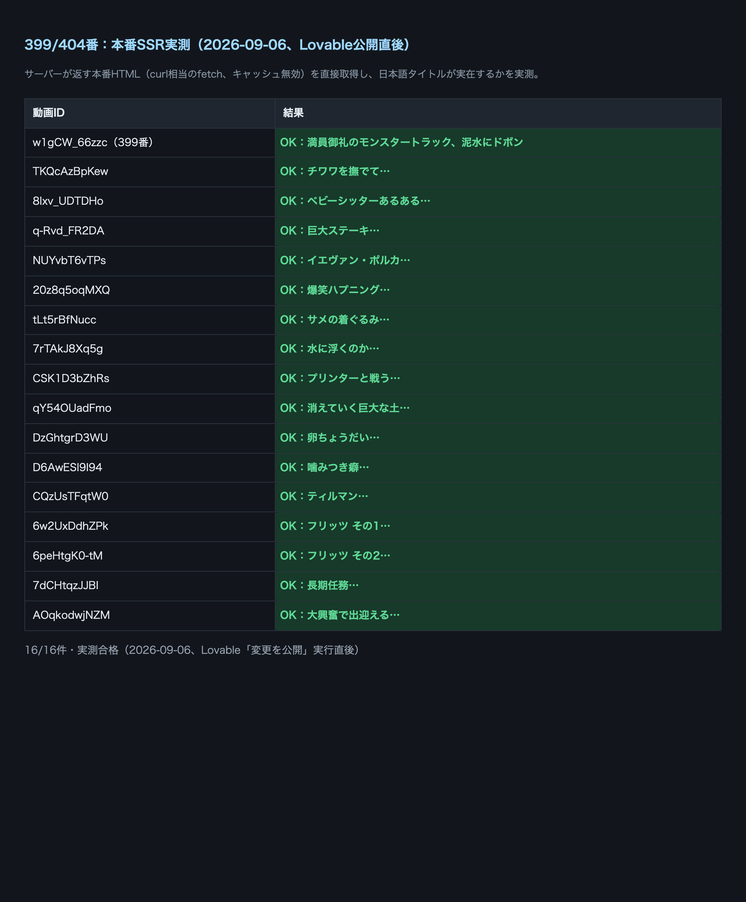

店主が『Sinking Monster Truck / flyingtower』というカードを見て「これだと開いた人が何の動画か分からない」と指摘。サイト全体の/watch?v=<videoId>ページ（YouTube単体動画カード）のうち、英語の原題・投稿者名がそのまま題名になっているものを、実測アクセス数（card_stats.play_count）でよく見られている順に選び、日本語のクリックしたくなるタイトル・一言コピーへ書き直した。Sinking Monster Truck自体は既に別セッション（案件#399）が対応済みだったため、それ以外の16件を今回の対象にした。
実装はsrc/routes/watch.tsxのMANUAL_WATCH_OVERRIDES（コード側の個別上書き）。本来はadmin_stock.titleをDBで直接書き換える想定だったが、リポジトリのGitHub SecretsにSUPABASE_SERVICE_ROLE_KEYが存在せず、DB書き込み経路が構造的に使えないと実測で判明したため（既知の問題）、案件#399と同じコード側の方式に切り替えた。
「よく見られている順」に選んだ16件を日本語化・本番反映済み（残りの英語題名カードは、今回選ばなかった分＝play_count実績が低い、または音楽アーティスト名+曲名形式で原題保持が妥当なもの）。
| 元の英語題名 | 新しい日本語題名 | ページ |
|---|---|---|
| Guy Pets Chihuahua to Relax - Bites Hand | チワワを撫でて落ち着かせようとしたら、まさかの一噛み | 開く |
| Babysitting Fails | Best of Adam Rose React Compilation | ベビーシッターあるある失敗集（Adam Roseのリアクション） | 開く |
| Stuffing a Giant Steak with Homemade Butter in the Forest | 森の中で、巨大ステーキに手作りバターをこれでもかと詰め込む | 開く |
| Cat Vibing To Ievan Polkka | あの中毒ソング「イエヴァン・ポルカ」でノリノリになる猫 | 開く |
| Try Not to Laugh Challenge: Funniest Cat Moments | 笑ったら負け。Simon's Catの爆笑ハプニング集 | 開く |
| Cat Wearing A Shark Costume Cleans The Kitchen On A Roomba | サメの着ぐるみを着た猫が、ルンバに乗ってキッチンを掃除する | 開く |
| 'CAN IT SWIM' PHONE CHALLENGE!!! | スマホは水に浮くのか沈むのか、まじめに実験してみた | 開く |
| Cat vs Printer - The Translation | プリンターと戦う猫、その鳴き声を「翻訳」してみた | 開く |
| Massive Ephemeral Earth Mural by artist David Popa | 山肌にそのまま描く、消えていく巨大な土の絵 | 開く |
| Mishka the Talking Husky Wants My Eggs! - SUBTITLED | 「卵ちょうだい」としゃべる、あのハスキー犬ミシュカ | 開く |
| Chihuahua Always Bites His Owner! | It's Me or The Dog | 飼い主に噛みつき癖が直らないチワワ、しつけの現場 | 開く |
| Skateboarding Dog（Tillman） | スケボーを乗りこなす、あの伝説のブルドッグ「ティルマン」 | 開く |
| Fritz Learns to Catch Compilation #1 | キャッチが下手すぎる犬フリッツの練習記録 その1 | 開く |
| Fritz Learns To Catch Compilation #2 | キャッチが下手すぎる犬フリッツの練習記録 その2 | 開く |
| Dog Reunited With Owner Returning From Deployment | 長期任務から帰ってきた飼い主と、再会した瞬間の犬 | 開く |
| Ecstatic Dogs Welcome Home Their Owners After Being Away | 旅行から帰ってきた飼い主を、大興奮で出迎える犬たち | 開く |
main合流済み（コミット cc2a535f）＋Lovable本番へ公開済み
Lovableの「変更を公開」を自動実行し、本番の x-deployment-id が psr2.827b9fa→psr2.bec36b8 に変わったことを確認（2026-09-06 00:36）。その後、node fetchで本番16ページ全件のHTML本文を取得し、それぞれ新しい日本語題名が実在することを1件ずつ実測（16 / 16 件 OK）。旧英語題名は全ページで消えている。
main合流後、Lovableの公開が反映されていなかったため「変更を公開」を再実行し、SSR実測で16件全件が日本語タイトルのままであることを再確認した。

残りの英語題名カード（Almost September - Bdash x Miranda・Luci Gang - HEADLOCK・音楽アーティスト名+曲名形式のもの等）は、①play_count実績が今回選んだ16件より低い、または②「アーティスト名 - 曲名」という音楽ページとして原題保持が妥当な形式、のいずれかに当たるため今回は対象外とした。X投稿由来の「wow」等（kind: x）は表示経路が別（tweetMeta系）で、今回のwatch.tsx側の対応範囲には含まれない。継続対応が必要なら次の担当へ引き継ぐ。